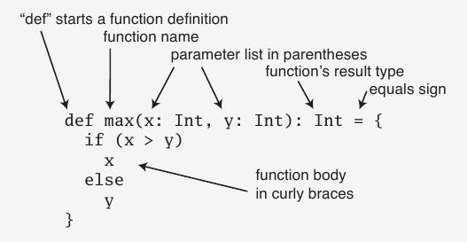

Scala is an elegant, multi-paradigm language combining the functional and imperative models of computing seamlessly.
Many languages nowaways are object oriented in a sense of the defintion. Take Java for instance, Java is object oriented in that it has a paradigm in the language where the programmer can define an object that contains fields and methods but it is not purely object oriented in that it distinguishes primitive values such as int, boolean and double apart from their object forms Integer, Boolean and Double and that it has static variables that are not truly the members of a single object. Scala, on the other hand, is purely object oriented rivaling even Smalltalk. In Scala, even numbers are objects so the statement var = 1 + 2 is really the object 1 of class Int calling its method + and passing it an object 2. The designers of Scala allow the programmer to define methods in objects with the names of operators like !, ^, @ which can be called using infix notation like requester ! sum.
One of the cooler things about Scala is that it brings the advantages of functional programming into the object oriented arena that many developers are already familiar with, making functional programming a viable option for production code in industry. Big name companies that have recognized this and begun to utilize Scala in their businesses are names that you are most certainly familiar with: Twitter, LinkedIn and Intel to name a few.
Another functional aspect of Scala is that it allows the programmer to decide whether they want to write a function (or an object for that matter) to be imperative (producing side effects) or to be functional (producing no side effects). Just as Java's String's are immutable and string manipulation could be considered functional in that there are no side effects on the original string, Scala implements many data types that are immutable, providing this same functionality to objects like lists, tuples, maps and sets.
In this section we will cover basic syntactic layout for Scala programs: declaration of classes, variables, functions and the like. Scala offers quite a bit of syntatic sugar as well, to make accesing its powerful constructs simpler.
To start us out, let's examine a variable declaration.
var one = 1
val two = 2
A var qualifier is how most variables will be declared in Scala. Scala is a strongly typed language but its compiler uses type inference to apply strong typing while allowing most variables to be declared simply as a var, similarly to Javascript.
Scala, being a functional language offers the programmer the ability to code in a purely functional manner by offering no side effects. The way it implements side effect prevention for variables is the val qualifier. val essentially makes variables final and unaffected by side effects.
Now that we know how to declare a variable and are aware of Scala's type inference, let's move on to functions.
def max(x: Int, y: Int): Int = {
if (x > y) x
else y
}
The Scala method signature is as follows:

This is not the only way functions are defined in Scala, the programmer can also choose to utilize anonymous functions if he so desires.
someNumbers.foreach(x => println(x))
A function in this form is also known as a "lambda" in some languages like C#. The expression x => println(x) means that each value generated by the foreach function will temporarily take go into x and have println applied to it. This example is trivial but this sort of construct can reduce code clutter with semi-useless functions.
Now that we've seen variables and functions let's do a class.
object HelloWorld {
def main(args: Array[String]) {
println("Hello, world!")
}
}
Classes that contain main methods in Scala are not like a typical class, they are referred to as Object classes that implement the singleton pattern. It makes sense since most of the time classes that have main methods in them are used as drivers and sometimes not really as a class themselves. One of the reasons that Scala makes this distinction is because it has a baseclass App that is of this exact form.
To illustrate, an identical hello-world can be done in one line as so:
object Main extends App { println("Hello, World!") }
A more traditional sum class can be executed as follows:
class Sum {
var runningSum
def sum(args : Array[Int]) : Int =
{
for (arg <- args)
{
runningSum += arg
}
return runningSum
}
}
Scala's designers took quite a bit of time developing their object orientation and inheritance paradigms and the power that they give the programmer is quite immense. Notions that can be valuable but have significant drawbacks, like multiple inheritance, are implemented in Scala in a way that prevents the horrors of their predecessors.
Scala does utilize a traditional inheritance structure and it does so through the use of its abstract classes. A class must be defined as abstract if there are to be any subclasses of it. This brings about an interesting implication: the inheritance design of a software system must be well thought out before embarking upon it because you can't extend any old object.
Along with Scala's abstract classes, Scala uses the notion of Traits. A trait is similar to an Java's abstract classes in that it allows the definition of unimplemented or fully implemented methods along fields. When objects are created, the different traits that it posses are combined using what the Scala designers call "mix in composition" which takes the members of a class and adds the members of its traits to it.
In my opinion, after doing research on Scala, traits seemed like the far more interesting aspect of Polymorphism found in Scala. Scala allows the programmer to mix in multiple traits to a single object, similarly to how Java allows an object to implement multiple interfaces. This is noteworthy because in Java, a class can only directly inherit from a single abstract class and implement from as many interfaces as it desires but in Scala a class can be mixed with as many traits as the programmer desires, offering a powerful combination of implemented and unimplemented methods as well as fields. Traits also offer the is-a relationship to classes that extend them.
Traits can also modify the effects of other traits. For instance, a trait A can extend an abstract class B that defines an unimplemented method. In the definition for A, it can implement B's method and provide some modification to it. Take the following example of a trait for a queue of integers.
abstract class IntQueue {
def get(): Int
def put(x: Int)
}
If for some reason we wanted the queue to double the elements it contains as they were being entered, we could use this trait.
trait Doubling extends IntQueue {
abstract override def put(x: Int) { super.put(2 * x) }
}
This is useful in that Doubling modifies its superclass' method and, since multiple traits can be applied to one object, the same function in one class can be augmented by the different traits that it has so that it becomes a rich, robust call that can do error checking, sanitation and normalization all in a single call.
Many languages are overly verbose whereas some are confusingly terse, Scala seems to find a good middle ground, offering some powerful one liners but still allowing their terser versions to be used.
Let's take a simple example of searching a string for an uppercase character. In Java, the code would look like this:
boolean nameHasUpperCase = false;
for (int i = 0; i < name.length(); ++i) {
if (Character.isUpperCase(name.charAt(i))) {
nameHasUpperCase = true;
break;
}
}
In Scala, this for loop can be reduced to
val nameHasUpperCase = name.exists(_.isUpper)
Let's take another example of a common programming construct: a class definition. In Java, this is a class definition
public class MyClass {
private final int index;
private final String name;
public MyClass(int index, String name) {
this.index = index;
this.name = name;
}
}
The exact same representation is given in Scala by
class MyClass(index: Int, name: String)
Scala offers a construct called "pattern matching" which are similar to the switch statement in Java. In Java 1.7, the only values that can be switched upon are int's and String's, in Scala classes can be used for matching and, because of the functional nature of Scala, the case can result to a function stored in a variable, leading to very powerful and concise statements.
Take the following code for example
def parseArgument(arg: Any) = arg match {
case "-h" | "--help" => displayHelp
case "-v" | "--version" => displayVerion
case i:Int | d:Double => "Numbers cannot be passed as arguments"
case _ => unknownArgument(_)
}
Instead of having a complicated and deeply nested series of if's and else's to parse arguments to a program, this pattern matching sequence handles arguments gracefully. Let's walk through this one to illustrate its power.
Notice that the function is defined to take an Any which is analagous to Object in Java, so this is a fully general function and, as its first case, it checks to see if arg is the string "-h" without doing any instanceof type checking, or concern for "Cannot cast X to Y" exceptions. The second case is similar to the first. The third, however, is very unique as it is actually checking to see which type the argument belonged to (assuming that all arguments are not strings).
The power of this pattern matching is astounding.